#1: Sojourner Truth Memorial Statue
 The African American Heritage Trail begins at the Sojourner Truth Memorial Statue at the corner of Park and Pine Streets. Just a few doors down from her house at 35 Park Street the statue was dedicated in 2002 after ten years of organizing and fundraising.
Sojourner Truth was a former slave who came to Florence, Massachusetts, in 1843 and joined the Northampton Association of Education and Industry, a utopian community dedicated to equality and justice. It was here in Florence where she met abolitionists such as William Lloyd Garrison and Frederick Douglass, dictated her famous autobiography, and became a nationally known advocate for women's rights and the abolition of slavery.
Every Sunday of Memorial Day weekend anti-racism and social justice advocates gather to celebrate Truth's abiding inspiration and recognize the work of young activists of high school age.
The African American Heritage Trail begins at the Sojourner Truth Memorial Statue at the corner of Park and Pine Streets. Just a few doors down from her house at 35 Park Street the statue was dedicated in 2002 after ten years of organizing and fundraising.
Sojourner Truth was a former slave who came to Florence, Massachusetts, in 1843 and joined the Northampton Association of Education and Industry, a utopian community dedicated to equality and justice. It was here in Florence where she met abolitionists such as William Lloyd Garrison and Frederick Douglass, dictated her famous autobiography, and became a nationally known advocate for women's rights and the abolition of slavery.
Every Sunday of Memorial Day weekend anti-racism and social justice advocates gather to celebrate Truth's abiding inspiration and recognize the work of young activists of high school age.
#2: The Florence Congregational Church
 The Florence Congregational Church, across from the Sojourner Truth Memorial Statue was founded in 1860 by J. P. Williston and others from First Church in Northampton. UGRR agent Moses Breck, was the builder. Behind the Cloverdale Nursery School is the "Pine Grove" where members of the NAEI and visitors like Frederick Douglass, William Lloyd Garrison, and Wendell Phillips spoke beneath an old growth pine, 150 feet tall.
The Florence Congregational Church, across from the Sojourner Truth Memorial Statue was founded in 1860 by J. P. Williston and others from First Church in Northampton. UGRR agent Moses Breck, was the builder. Behind the Cloverdale Nursery School is the "Pine Grove" where members of the NAEI and visitors like Frederick Douglass, William Lloyd Garrison, and Wendell Phillips spoke beneath an old growth pine, 150 feet tall.
#3: The Nonotuck Silk Mill Dam
 The Nonotuck Silk Mill Dam was part of the property of the NAEI in 1842. In 1840 David Lee Child and Lydia Maria Child, abolitionists from Boston, experimented with growing sugar beets as an alternative to slave grown sugar cane. They processed the beets at the old mill near the dam. Lydia Maria Child arranged for David Ruggles to join the NAEI as a respite from the stress of life in NYC. Her Appeal for That Class of Americans Called Africans moved William Lloyd Garrison to name her the "first woman of the republic."
The Nonotuck Silk Mill Dam was part of the property of the NAEI in 1842. In 1840 David Lee Child and Lydia Maria Child, abolitionists from Boston, experimented with growing sugar beets as an alternative to slave grown sugar cane. They processed the beets at the old mill near the dam. Lydia Maria Child arranged for David Ruggles to join the NAEI as a respite from the stress of life in NYC. Her Appeal for That Class of Americans Called Africans moved William Lloyd Garrison to name her the "first woman of the republic."
#4: Basil Dorsey's House
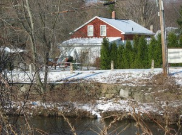 4 Florence Road was built around 1840 by William Warner. Basil Dorsey purchased the property in 1852, moving from his home on Nonotuck Street. Money to buy his freedom was raised in the village to ensure his safety in his travels outside the Valley. His second wife, Cynthia, was the daughter of the Almond Joneses of Pittsfield who are also buried in the Park Street Cemetery. Dorsey died on February 15, 1872.#5: Cynthia Dorsey's House
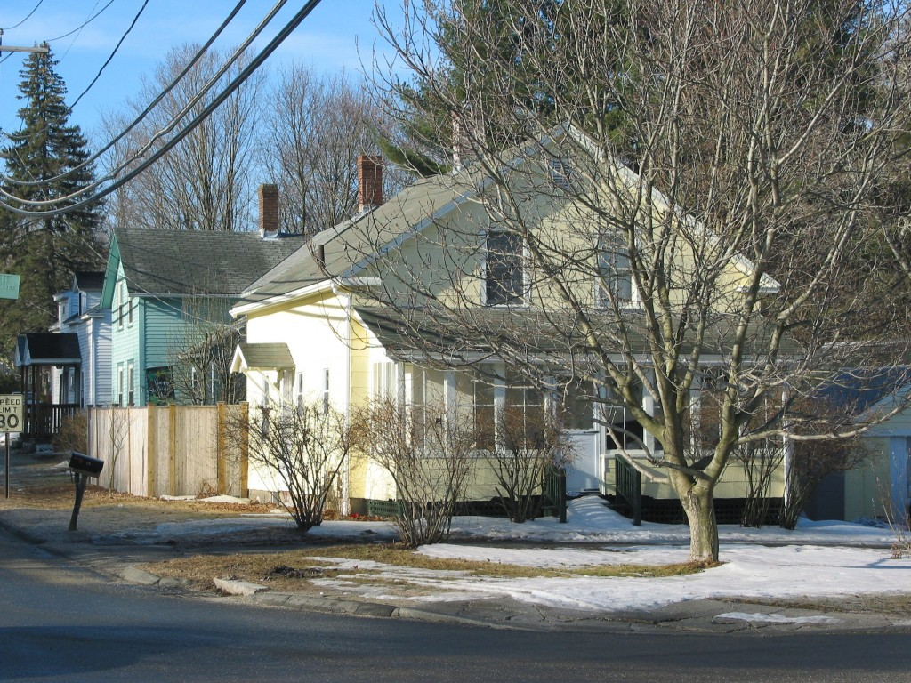 The house at 15 Ryan Road was owned by Cynthia Dorsey. Basil Dorsey had acquired six acres in 1852 and this property was part of that parcel. Cynthia moved to New Haven, Conn. around 1882.#6: Henry Anthony's House
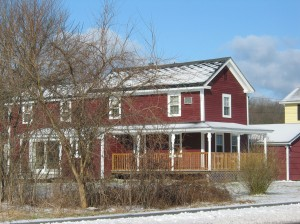 40 Spring Street was the home of Henry Anthony, one the first African Americans to live in Florence. We believe he was the fiddle-playing "fugitive from injustice" that was living in the Swamp House when Lydia Maria Child purchased 100 acres of land on Florence Road in 1840. When the Childs moved into the house it is likely Anthony moved out and built this house. He was one of five Florence fugitives to sign a call to meeting to resist the Fugitive Slave Law of 1850. Henry Anthony's wife, Maria, was native-born Irish, making them one of the earliest interracial couples to live in Florence.#7: Site of Northampton Water Cure
This is the approximate location of the original site of the Northampton Water Cure, established by David Ruggles, one of the great unsung heros of the UGRR. Ruggles, while in NYC, helped over 600 fugitive slaves to freedom, including Frederick Douglass. By the time of Ruggles' death in 1849, the water cure had become one of the largest enterprises in Florence. The house was moved to its current location at 47 Florence Road not long afterwards.#8: Laura Knowles Washington's House
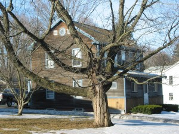 9 Florence Road was the home of Laura Knowles Washington and George Hodestia. Washington moved from Nonotuck Street where she had lived in the T.H. Jones family house. Hodestia was caretaker at the Park Street Cemetery and had been a slave in Maryland.#9: David Ruggles House
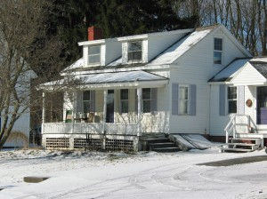 47 Florence Road was the first building of the Northampton Water Cure. Here David Ruggles lived and worked from 1845 until his death in 1849. Originally situated on Spring Street (#7 on the map) the house was moved to this location around 1851. William Wright, a fugitive slave lived here. Hannah Randall, an African American operative at the water cure, bought the house in 1856. She lived here until her death in 1882.#10: Nonotuck Silk Mill
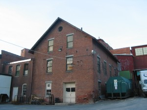 This building was an early part of the Nonotuck Silk Company, established by Samuel L. Hill in the mid-1850s. It was built on the site of the daguerreotype factory of Alfred C. Critchlow. Critchlow harbored the fugitive slave Louis French in this factory. The original wooden building burned in 1854.#11: Sarah Askin's House
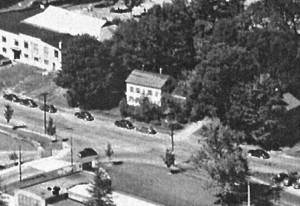 Site of the home of Sarah Askin, a free African American from Pittsfield, which burned to the ground in the early 1970s. Her husband, Nelson Askin, purchased land in this area in 1848, but abandoned the area leaving Sarah to raise her six children by herself. Her son Luther, became a superintendent at the Nonotuck Silk Company across Nonotuck Street from their house. In the mid-1860s he played for the locally famous Florence Eagles thereby becoming the earliest known African American to play on an integrated baseball team in the United States. Sarah became a leader at the Free Congregational Society that met at Cosmian Hall and the Ladies Industrial Union, serving at the head of the table at its public suppers.#12: Northampton Association Silk Mill
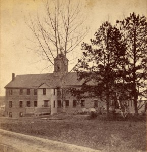 Site of the silk mill of the Northampton Association of Education and Industry, formerly owned by Samuel Whitmarsh who brought silk manufacture to the region. During NAEI days both Sojourner Truth and David Ruggles lived here, also former slaves James Willson, George Washington Sullivan and Stephen Rush. In 1845 the mill was sold along with 100 acres to a group of industrialist abolitionists led by J. P. Williston of Northampton, and converted to cotton manufacture. These evangelical abolitionists would continue a policy of hiring fugitive slaves as operatives; several of them settled on Nonotuck Street. The building was demolished in the late 1960s.#13: 191 Nonotuck St. Basil Dorsey
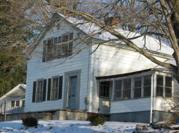 191 Nonotuck Street, was built by fugitive slave Basil Dorsey in 1849. He sold the house in 1852, moving to 4 Florence Road (#4 on this map). The fugitive slave Thomas H. Jones, who had written a popular slave narrative in 1850, bought the house in 1854, lived here until 1859, moved to Worcester, and then settled in New Bedford. The house was placed on the National Register of Historic Places in 2006. In 1850, Florence was home to 60 African Americans, 10% of the local population.#14: Elisha Hammond's House
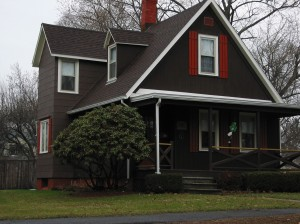 The cottage at 26 Maple Street was built in 1845 by Elisha Hammond, an artist and craftsman, who joined the NAEI in 1844. His obituary states that "fugitives were never turned from his door." His portrait of Frederick Douglass was painted in 1844 not long before publication of his famous Narrative of the Life of Frederick Douglass, An American Slave.#15: Samuel Hill's House
 The south wing of the house at 29-33 Maple Street was built by Samuel L. Hill in 1845. Hill was Treasurer of the Northampton Association of Education and Industry and founder of the Nonotuck Silk Company. His son, Arthur G. Hill, born at the Ross Homestead, remembered fugitive slaves staying here for the night and riding with his father to Cummington or Whately, nearby stops on the Underground Railroad. Samuel Hill is also remembered for establishing what would become the Florence Savings Bank, the Florence Kindergarten (now the Hill Institute), and the Lilly Library.
The south wing of the house at 29-33 Maple Street was built by Samuel L. Hill in 1845. Hill was Treasurer of the Northampton Association of Education and Industry and founder of the Nonotuck Silk Company. His son, Arthur G. Hill, born at the Ross Homestead, remembered fugitive slaves staying here for the night and riding with his father to Cummington or Whately, nearby stops on the Underground Railroad. Samuel Hill is also remembered for establishing what would become the Florence Savings Bank, the Florence Kindergarten (now the Hill Institute), and the Lilly Library.
#16: Sojourner Truth's House at 35 Park Street
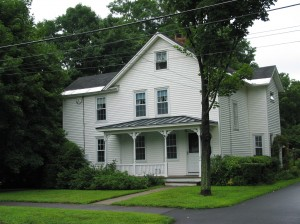 35 Park Street was the home of Sojourner Truth from 1850 until 1857 when she moved to Battle Creek, Michigan. Truth was a member of the NAEI between 1843 and 1846. She launched her career as a nationally known speaker against slavery and for women's rights from this home in Florence. She paid off the mortgage on the house in 1854 by selling the narrative of her days in slavery published with the help of William Lloyd Garrison in 1850.#17: Park Street Cemetery
 Among the many African American burials at the Park Street Cemetery are those of at least four former slaves: Basil and Charles Dorsey, Henry Anthony and George Hodestia. Five of the many abolitionists buried here have been identified as Underground Railroad assistants.
Among the many African American burials at the Park Street Cemetery are those of at least four former slaves: Basil and Charles Dorsey, Henry Anthony and George Hodestia. Five of the many abolitionists buried here have been identified as Underground Railroad assistants.
#18: Charles Dorsey's House - 114 Pine Street
 114 Pine Street was built by the quarryman Charles Robert Dorsey, a son of Basil Dorsey, Florence's well known teamster. C. R. Dorsey is known to have provided the stone for the foundation of the new First Church in Northampton in 1878. In the 1920's the Moquettes lived in the house.
114 Pine Street was built by the quarryman Charles Robert Dorsey, a son of Basil Dorsey, Florence's well known teamster. C. R. Dorsey is known to have provided the stone for the foundation of the new First Church in Northampton in 1878. In the 1920's the Moquettes lived in the house.
A: Ross Homestead
 While not convenient to the rest of the Sites on the African American Heritage Trail the Ross Homestead at 123 Meadow St. is worth a special trip. At one time the Agricultural Department of the NAEI, the farm was purchased by Austin Ross in 1847 and is a well documented station on the UGRR. In 2002 it became a site on the National Park Service's Underground Railroad Network to Freedom. Now a private home, it is not open to the public.
While not convenient to the rest of the Sites on the African American Heritage Trail the Ross Homestead at 123 Meadow St. is worth a special trip. At one time the Agricultural Department of the NAEI, the farm was purchased by Austin Ross in 1847 and is a well documented station on the UGRR. In 2002 it became a site on the National Park Service's Underground Railroad Network to Freedom. Now a private home, it is not open to the public.
B and C Joseph Willson and Ezekiel Cooper of Maryland
 129 and 133 Nonotuck Street were the homes of the families of Joseph Willson, and Ezekiel Cooper of Maryland. Willson was one of ten fugitive slaves who signed a call to meeting to resist the Fugitive Slave Act. These were two of seven households of African Americans, 35 men, women and children in all. The Florence area was nearly ten percent African-American in 1850. By 1855 most African American families had left Nonotuck Street where they had been working at the factories of the Willistons and Alfred Critchlow.
129 and 133 Nonotuck Street were the homes of the families of Joseph Willson, and Ezekiel Cooper of Maryland. Willson was one of ten fugitive slaves who signed a call to meeting to resist the Fugitive Slave Act. These were two of seven households of African Americans, 35 men, women and children in all. The Florence area was nearly ten percent African-American in 1850. By 1855 most African American families had left Nonotuck Street where they had been working at the factories of the Willistons and Alfred Critchlow.
D: Benson Cottage
 615 Riverside Drive, part of the "Benson cottage" that once stood at the southeast corner of Maple and Nonotuck streets. It is likely Sojourner Truth lived here between 1845 and 1848 and began to relate the narrative of her life to Olive Gilbert.
615 Riverside Drive, part of the "Benson cottage" that once stood at the southeast corner of Maple and Nonotuck streets. It is likely Sojourner Truth lived here between 1845 and 1848 and began to relate the narrative of her life to Olive Gilbert.